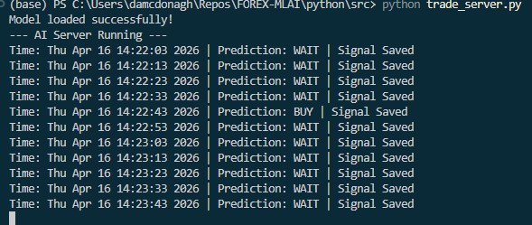
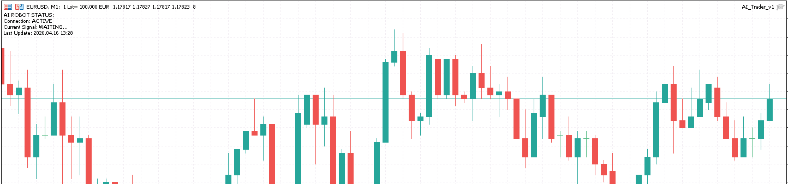

Documenting the EURUSD Triple Screen AI Architecture
The project is organized to separate the Python "Brain" logic from the MQL5 "Body" execution scripts.

# Writing to MT5 Common Folder
COMMON_PATH = os.path.join(os.environ['APPDATA'],
"MetaQuotes", "Terminal", "Common", "Files")
// Reading from Common Folder
FileOpen("ai_signal.txt",
FILE_READ|FILE_TXT|FILE_COMMON);Note: Since the screenshot corners are cropped, MQL5 logs confirm the "ai_signal.txt" is being polled every 2 minutes.
Initial model training achieved 54.36% accuracy. The model analyzes three timeframes to confirm market direction before a signal is written to the bridge.
Transitioning from "Wait" signals to active OrderSend() commands in MQL5.
Adding RSI and Bollinger Bands to the Python model for higher signal conviction.